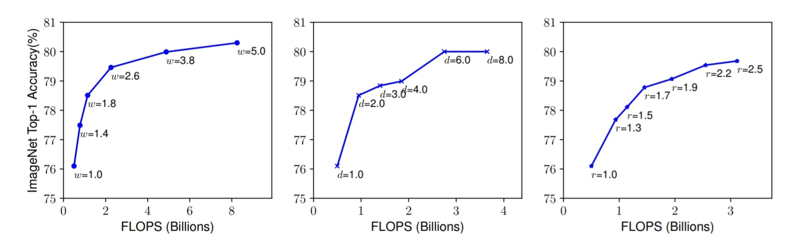

采用efficientNet作为基准模型。
代码实现:tensorflow版本/ 第三方实现的PyTorch代码
在研究中通常会通过放大模型结构来获得更大精度。该论文系统的研究了
为了进一步研究，我们使用神经架构搜索设计了一个baseline网络，并且将模型放大获得一系列模型，我们称之为EfficientNets，它的精度和效率比之前所有的卷积网络都好。
为了获取更好的精度，往往采用放大卷积神经网络的方法。但是任意缩放需要繁琐的人工调参同时可能产生的是一个次优的精度和效率。
在本篇论文中，我们想要研究和重新思考放大CNN的过程,提出一个问题：是否存在一个原则性的放大CNN的方法实现更好的精度和效率？我们的实验研究表明了平衡深度、宽度和分辨率这三个维度是至关重要的，令人惊讶的是这样的平衡可以通过简单的使用一组常量比率来缩放每一个维度。
实验研究表明平衡深度、宽度和分辨率这三个维度是至关重要的，作者提出了一个简单高效的复合缩放方法，使用一组固定的缩放系数统一缩放网络深度、宽度和分辨率。
我们在已经存在的MobileNets和ResNetsResNets上展示了我们的缩放方法可以工作得很好，值得注意的是，模型缩放的高效性严重地依赖于baseline网络，为了进一步研究，我们使用网络结构搜索发展了一种新的baseline网络，然后将它缩放来获得一系列模型，称之为 EfficientNets 。
图1.作者方法和传统方法之间的区别
图2.总结了ImageNet,可见efficientNet优于其他网络
作者将放缩问题公式化，研究了不同方法并提出了新的放缩方法:
更深的网络可以捕获到更丰富和更复杂的特征，在新任务上也可以泛化的更好。但是更深的网络由于梯度消失问题更难训练。尽管有一些技术，例如跨层连接、批量归一化等可以有效减缓训练问题，但是深层网络的精度回报减弱了：举个例子，ResNet-1000和ResNet-101具有类似的精度，即使它的层数更多。
缩放网络宽度也是一种常用的手段，正如之前讨论过的，更宽的网络可以捕捉到更细粒度的特征从而易于训练。然而，非常宽而又很浅的网络在捕捉高层次特征时有困难。
使用更高分辨率的输入图像，ConvNets可能可以捕捉到更细粒度的模式。从最早的 224x224，现在有些ConvNets为了获得更高的精度选择使用 229x229 或者 331x331。目前，GPipe使用 480x480 的分辨率获得了最先进的ImageNet精度，更好的精度比如 600x600 也被广泛使用在目标检测网络中。
我们经验上可以观察到不同缩放维度之间是不独立的，直观上来讲，对于分辨率更高的图像，我们应该增加网络深度，因为需要更大的感受野来帮助捕获更多像素点的类似特征，同时也应该增加网络宽度来获得更细粒度的特征。这些直觉指导着我们去协调平衡不同缩放维度而不是传统的单个缩放维度。
为了追去更好的精度和效率，在缩放时平衡网络所有维度至关重要。
事实上，之前的一些工作已经开始在追去任意缩放网络深度和宽度，但是他们仍然需要复杂的人工微调。在本篇论文中，我们提出了一个新的复合缩放方法——使用一个复合系数统一缩放网络宽度、深度和分辨率：